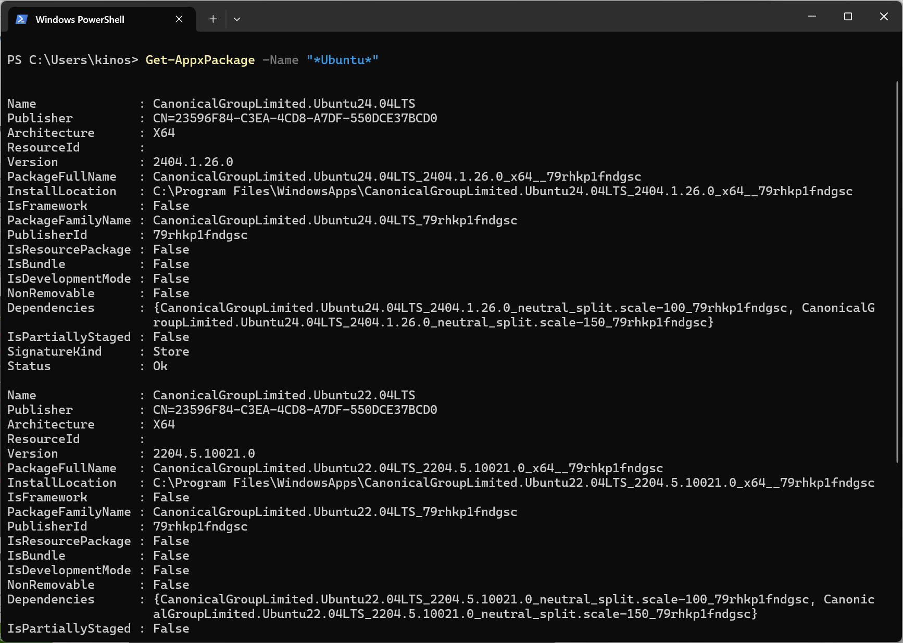
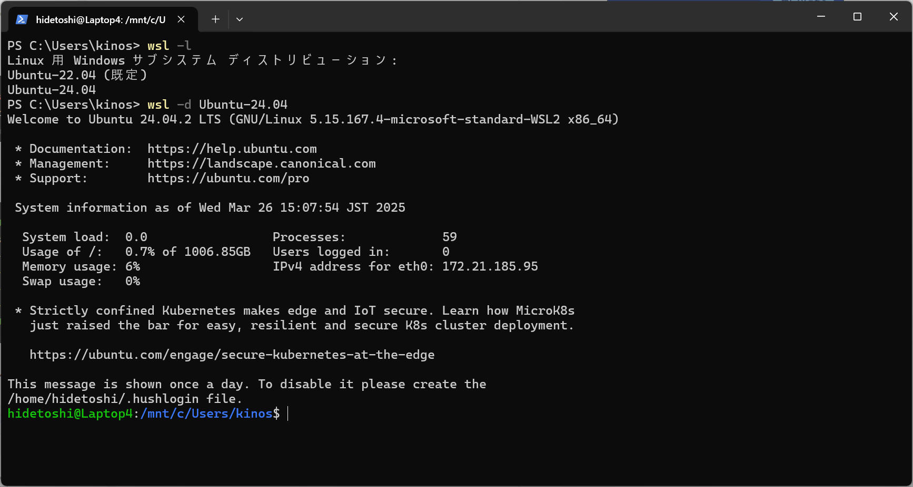

NOTE
WSL2 のディスク使用量は、残念ながら WSL2 内部のファイルを消してもサイズが小さくならないらしいです。私のPC環境でも全く効果ありませんでした。
Windows の管理ツールを使用して WSL2 ディスク使用量を削減する方法について調べたのでここに記載します。
"*Ubuntu*" でフィルタして Get-AppxPackage することで自分の Ubuntu (WSL2)
一覧を見つけることができます。
下図例では Ubunt24.04LTS と Ubuntu22.04LTS の２つがあることを示しています。
ここで注意したいことは、PackageFullName：CanonicalGroupLimited.Ubuntu24.04LTS_2404.1.26.0_x64__79rhkp1fndgsc が実際に存在するパスは "C:\Users\kinos\AppData\Local\Packages\CanonicalGroupLimited.Ubuntu24.04LTS_79rhkp1fndgsc\LocalState\ext4.vhdx" であることです。今後使用するコマンドでは後者のフルパスを使用します。（※私の場合の実例です）

以下の手順で Optimize-VHD コマンドによる VHD ファイルを最適化を行います。
wsl --shutdown
optimize-vhd -Path C:\Users\kinos\AppData\Local\Packages\CanonicalGroupLimited.Ubuntu24.04LTS_79rhkp1fndgsc\LocalState\ext4.vhdx -Mode full
WSL 再起動は "wsl -d" の後に対象ディストリビューションを指定することで行います。
同様に "Ubuntu-24.04"
を引数にして実行します。

Optimize-VHD を利用できない場合、diskpart コマンドを使用して VHD ファイルを最適化することも可能です。以下の手順を試してみてください。
wsl --shutdown
diskpart
select vdisk file="C:\<path>\your.vhdx" attach vdisk readonly compact vdisk deatch vdisk exit前章で紹介の例と同じ内容だと下記のように入力します
select vdisk file="C:\Users\kinos\AppData\Local\Packages\CanonicalGroupLimited.Ubuntu24.04LTS_79rhkp1fndgsc\LocalState\ext4.vhdx" attach vdisk readonly compact vdisk deatch vdisk exit
本ページの情報は、特記無い限り下記 MIT ライセンスで提供されます。
| 2025-03-26 | - | 新規作成 |